Generated at: 2025-08-22 06:36:24.786900+00:00 UTC
Total Articles Crawled: 8960
Total Unique Articles Opened: 57
New Topic Coverage: 91.81%
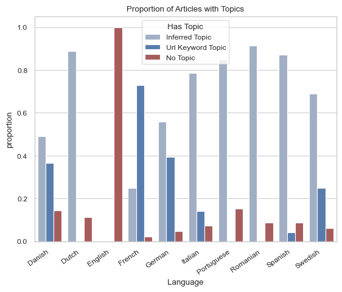
| feed_id | title | days_since_last_article | days_since_last_feed_crawl |
|---|---|---|---|
| 130 | Musique: dernières actus, interviews, concerts | 556 | 2 |
| 75 | El País | 556 | 2 |
| 150 | Atlas Magasin | 417 | 2 |
| 118 | Corriere.it - Homepage | 408 | 2 |
| 125 | Mircea Lungu - Stories | 408 | 2 |
| 168 | Kultur Blog | 277 | 2 |
| 189 | Stefano Tiozzo | 265 | 2 |
| 188 | GialloZafferano | 139 | 2 |
| 41 | Telegraaf - Niews | 81 | 2 |
| 169 | Artefakte | 62 | 2 |
WARNING! This date only contains values from the last '0' day(s).
| Reason | Count |
|---|---|
| Total | 0 |
| Language | count | mean | std | min | 25% | 50% | 75% | max |
|---|---|---|---|---|---|---|---|---|
| Danish | 568.0 | 334.58 | 302.20 | 41.0 | 133.75 | 224.5 | 430.25 | 2641.0 |
| Dutch | 430.0 | 449.91 | 331.54 | 61.0 | 208.00 | 350.5 | 605.00 | 2386.0 |
| English | 1.0 | 4.00 | NaN | 4.0 | 4.00 | 4.0 | 4.00 | 4.0 |
| French | 991.0 | 353.17 | 244.34 | 53.0 | 183.00 | 269.0 | 446.50 | 2078.0 |
| German | 1753.0 | 392.10 | 424.79 | 43.0 | 190.00 | 300.0 | 453.00 | 5737.0 |
| Italian | 1389.0 | 354.21 | 271.97 | 46.0 | 180.00 | 279.0 | 448.00 | 3060.0 |
| Portuguese | 1191.0 | 339.02 | 266.33 | 52.0 | 181.00 | 273.0 | 409.50 | 4393.0 |
| Romanian | 757.0 | 396.23 | 319.53 | 50.0 | 191.00 | 306.0 | 470.00 | 2561.0 |
| Spanish | 1282.0 | 514.92 | 1631.24 | 82.0 | 216.00 | 342.0 | 553.75 | 44891.0 |
| Swedish | 598.0 | 272.04 | 235.34 | 40.0 | 125.25 | 188.0 | 323.50 | 1812.0 |
| Language | count | mean | std | min | 25% | 50% | 75% | max |
|---|---|---|---|---|---|---|---|---|
| Danish | 568.0 | 37.95 | 13.92 | 9.0 | 28.00 | 38.0 | 47.0 | 100.0 |
| Dutch | 430.0 | 34.33 | 15.43 | 0.0 | 23.25 | 34.5 | 46.0 | 79.0 |
| English | 1.0 | 3.00 | NaN | 3.0 | 3.00 | 3.0 | 3.0 | 3.0 |
| French | 991.0 | 20.65 | 13.72 | 0.0 | 9.00 | 21.0 | 31.0 | 58.0 |
| German | 1753.0 | 39.39 | 15.21 | 4.0 | 27.00 | 40.0 | 51.0 | 100.0 |
| Italian | 1389.0 | 29.32 | 16.73 | 0.0 | 16.00 | 29.0 | 42.0 | 100.0 |
| Portuguese | 1191.0 | 32.89 | 16.74 | 0.0 | 19.00 | 33.0 | 44.0 | 92.0 |
| Romanian | 757.0 | 26.24 | 18.86 | 0.0 | 10.00 | 25.0 | 41.0 | 89.0 |
| Spanish | 1282.0 | 25.70 | 13.15 | 0.0 | 16.00 | 26.0 | 36.0 | 68.0 |
| Swedish | 598.0 | 54.41 | 17.36 | 11.0 | 41.00 | 54.0 | 67.0 | 100.0 |
| keywords | total_users | total_subscribers |
|---|---|---|
| bil | 2 | 1.0 |
| Lordbird16 | 2 | 0.0 |
| Cars | 2 | 0.0 |
| Music | 2 | 0.0 |
| hezbola | 1 | 0.0 |
| Bloc | 1 | 0.0 |
| surdej | 1 | 0.0 |
| beabadoobee | 1 | 0.0 |
| Robot | 1 | 0.0 |
| videospil | 1 | 1.0 |
| keywords | total_users |
|---|---|
| trump | 4 |
| greta thunberg | 2 |
| trump | 2 |
| taylor swift | 2 |
| drab | 2 |
| Politics | 2 |
| test | 1 |
| Musk | 1 |
| knivdrab | 1 |
| sports | 1 |
Total Active Users: 6
| Language | Count | total_exercise_time | total_reading_time | Bookmarks % Reviewed | Total Bookmarks |
|---|---|---|---|---|---|
| Danish | 3 | 14.95 | 44.50 | 0 | 0 |
| Dutch | 2 | 12.47 | 14.62 | 0 | 0 |
| French | 1 | 1.52 | 2.07 | 0 | 0 |
| Language | Feed Name | Article id | Article Title | Users Count | User Avg. Reading Time |
|---|---|---|---|---|---|
| Danish | 136.0 Politiken.dk - | 3249376 | 17-årig fører af Porsche er anholdt efter dødelig påkørsel foran BabySam | 1 | 9.15 |
| Dutch | 87.0 NRC | 3238194 | Bolivia rekent na twee decennia af met linkse machtspartij | 1 | 8.90 |
| Dutch | 87.0 NRC | 3242292 | Advocaten ontzet over mogelijk verbod op telefoons, tablets en laptops in spreekkamer gevangenis: ‘Er heerst Taghi-vrees’ | 1 | 5.72 |
| Danish | 160.0 videnskab | 3232488 | Lille studie sår tvivl: Flere tror, at de ikke kan tåle gluten uden at have en diagnose | 1 | 4.98 |
| Danish | 136.0 Politiken.dk - | 3250542 | Det dyreste surdejsbrød er allerbedst | 1 | 3.47 |
No active users in this language
No active users in this language
No active users in this language
Total Active users: 3
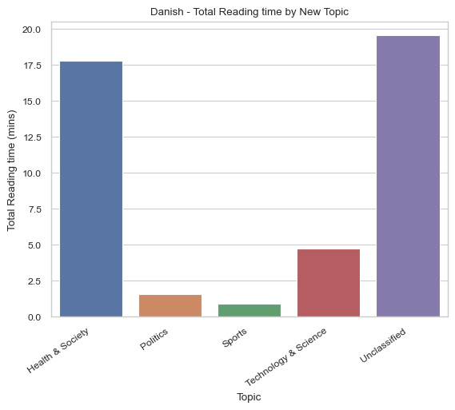 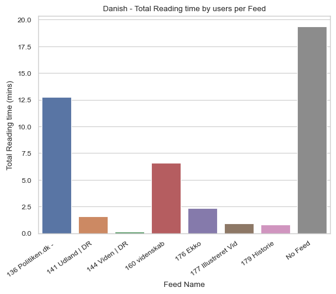 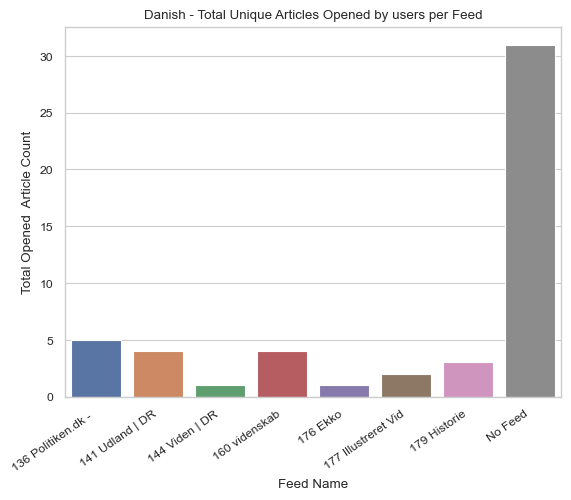 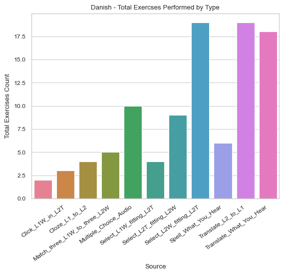No active users in this language
No active users in this language
No active users in this language
Total Active users: 2
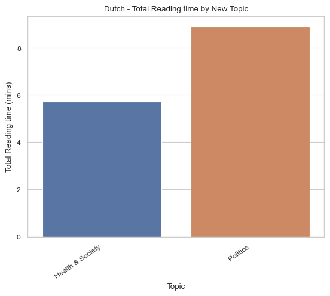 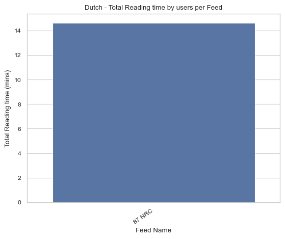 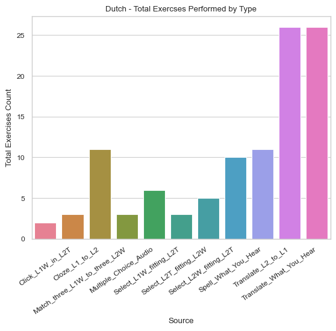Total Active users: 1
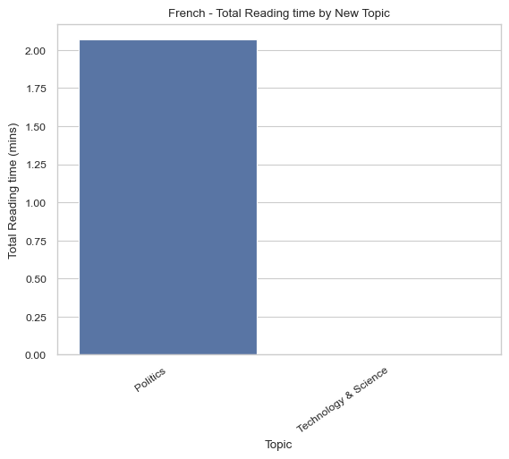 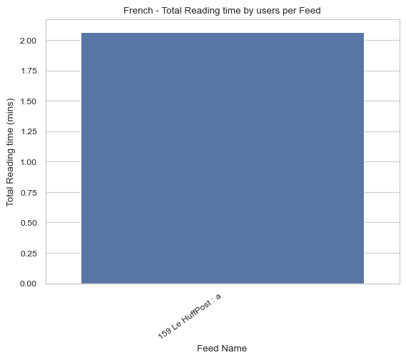 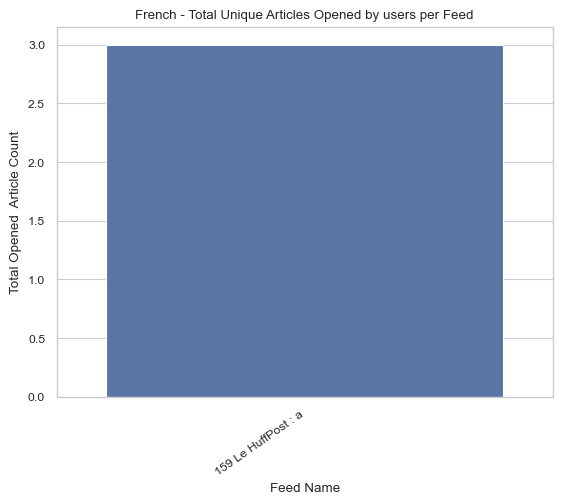 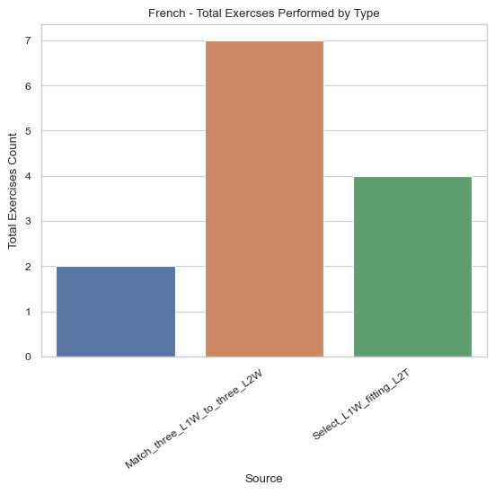No active users in this language
Sentences that occur in more than 10 articles during this weeks crawl, and were not filtered.
| Sent | Count |
|---|---|
| l'équipe, les sociétés de son groupe\n et utilisent des cookies ou traceurs pour stocker et/ou accéder à des informations sur votre terminal\n et traiter des données personnelles vous concernant. | 98 |
| en cas de refus, navigation et fonctionnalités seront limitées sur le site. | 98 |
| cela nous permet de vous afficher de la publicité personnalisée en fonction de votre navigation, de vos données de profil\n ou de votre localisation, de personnaliser le contenu éditorial, de mesurer l'audience de notre site et de permettre l'interaction avec les réseaux sociaux. | 98 |
| pour accéder\n gratuitement au site (hors contenus exclusifs abonnés), vous devez accepter l'utilisation des traceurs de publicité personnalisée, par l'équipe et des tiers partenaires. | 98 |
| quel plaisir de vous retrouver, avant d'accéder à l'équipe, merci d'accepter les cookies. | 98 |
| plus d'informations : politique de confidentialité. | 98 |
| vos préférences s'appliqueront uniquement à nos sites et pourront être modifiées à tout moment via\n le menu « ». | 98 |
| passer la publicité | 61 |
| mehr erfahren. | 58 |
| der preis für dich bleibt dabei\nunverändert. | 57 |
| diese affiliate-links sind durch ein | 57 |
| symbol\ngekennzeichnet. | 57 |
| wenn du über diese links einkaufst, erhalten wir eine provision, die unsere\nredaktionelle arbeit unterstützt. | 57 |
| du vet väl att du kan skapa ett gratiskonto på dn? | 56 |
| som inloggad kan du ta del av flera smarta funktioner. | 56 |
| en vous abonnant, vous accédez à la source de référence sur l'actu sportive. | 49 |
| accepter les cookies et accéder à l'équipe gratuitement accepter les cookies et accéder à l'équipe gratuitement | 49 |
| en vous abonnant, vous accédezà la source de référence sur l'actu sportive. | 49 |
| preis kann jetzt höher sein. | 49 |
| das hamburg journal informiert über das öffentliche geschehen, politische ereignisse und das kulturelle leben der stadt. | 48 |
| 19 agosto 2025 | 44 |
| la ciudad de karachi, en pakistán, paralizada por las fuertes lluvias. | 37 |
| [lee aquí el artículo completo] | 36 |
| 20 agosto 2025 | 35 |
| hat dir der beitrag gefallen? | 34 |
| folge uns auf msn und google news und verpasse keine neuigkeit rund um technik, games und entertainment. | 33 |
| version 1.2.39 | 30 |
| zowy voeten | 29 |
| la noche tranquila baja decibelios en gràcia. | 29 |
| não representam a visão nem espelham o seu posicionamento editorial. | 26 |
| portugal ativou o mecanismo europeu de proteção civil, ao abrigo do qual chegaram dois aviões fire boss para reforço do combate aos fogos. | 25 |
| os textos nesta secção refletem a opinião pessoal dos autores. | 25 |
| hier erfahren sie, was sich am tage zwischen nord- und ostsee ereignet hat. | 23 |
| suscríbete para seguir leyendo | 23 |
| shahzaib akber / efe | 23 |
| l’équipe shopping du figaro est indépendante de la rédaction. | 22 |
| nachrichtenressort | 21 |
| notizie e approfondimenti sugli avvenimenti politici, economici e finanziari. | 20 |
| os fogos provocaram dois mortos, incluindo um bombeiro, e vários feridos, na maioria sem gravidade, e destruíram total ou parcialmente casas de primeira e segunda habitação, bem como explorações agrícolas e pecuárias e área florestal. | 20 |
| portugal continental tem sido afetado por múltiplos incêndios rurais desde julho, sobretudo nas regiões norte e centro, num contexto de temperaturas elevadas que motivou a declaração da situação de alerta desde 02 de agosto. | 20 |
| contenu conçu et proposé par nos experts shopping. | 19 |
| a lire aussi | 19 |
| momento-chave | 19 |
| numa mensagem que pode ser interpretada como deslocada, o diretor comercial judson althoff revelou que a utilização de inteligência artificial permitiu à empresa poupanças de mais de 500 milhões de dólares nos setores de vendas, apoio ao cliente e engenharia de software. | 17 |
| este não é o primeiro ‘lapso’ deste tipo a ser cometido por executivos da microsoft, depois de matt turnbull, produtor da xbox game studios, ter sugerido que os trabalhadores que estavam preocupados pelos despedimentos em redmond podiam encontrar apoio nas ferramentas de ia como o chatgpt ou o copilot. | 17 |
| os dados dos analistas mostram que a nvidia vale atualmente mais do que o valor combinado dos mercados bolsistas do canadá e méxico juntos e também mais do que todas as empresas em bolsa no reino unido. | 17 |
| atualmente, a microsoft está no número dois, com cada ação a valer 503,51 dólares e a empresa a estar avaliada em 3,74 biliões. | 17 |
| a reuters destaca que a nvidia atingiu o bilião de dólares pela primeira vez em junho de 2023 e triplicou a valorização em apenas um ano, mais rápido que a apple e a microsoft, as outras duas empresas dos eua acima dos três biliões. | 17 |
| este aumento registado agora segue um início de ano algo atribulado, provocado pelo surgimento de concorrentes chineses como a deepseek que propõe um modelo mais barato e com um desempenho equiparado. | 17 |
| este comportamento de subida crescente justifica-se com o rápido crescimento do segmento da inteligência artificial, numa altura em que a procura pelos chips de elevado desempenho da nvidia está em alta constante. | 17 |
| no fecho do mercado, o aumento ficou-se nos 1,8%, fazendo com que a empresa ficasse avaliada em ‘apenas’ 3,97 biliões de dólares. | 17 |
| a subida de 2,8% no preço das ações da nvidia registado ontem fez com que a empresa ficasse avaliada acima dos quatro biliões de dólares, um feito histórico que mais nenhuma empresa, de nenhum outro setor atingiu. | 17 |
| recorde-se que a empresa já se comprometeu com um investimento acima de 80 mil milhões de dólares só na infraestrutura necessária para tal, durante este ano de 2025. | 17 |
| a microsoft já fez saber que grande parte destes lucros vão ser diretamente canalizados para os esforços de inteligência artificial. | 17 |
| numa altura em que a microsoft regista lucros de 26 mil milhões de dólares, receitas de 70 mil milhões num trimestre e acaba como segunda empresa com maior valorização no mercado nos 3,74 biliões de dólares, pode ser difícil passar a mensagem de que os despedimentos são uma forma de manter a rentabilidade da organização, lembra o tech crunch. | 17 |
| a microsoft continua as rondas de despedimentos em diversas unidades de negócio e, na semana passada, anunciou mais nove mil saídas, elevando o número total para 15 mil só este ano. | 17 |
| portugal ativou o mecanismo europeu de proteção civil. | 17 |
| prova disso é que a publicação de turnbull no linkedin acabou mesmo por ser apagada. | 17 |
| apesar de não se saber se os despedimentos estão claramente ligados ao uso de ia, este tipo de comentários não está a ser bem recebido pelos utilizadores e pelos trabalhadores afetados. | 17 |
| no que toca a receitas, no primeiro trimestre fiscal a nvidia registou 44,1 mil milhões de dólares e a expetativa para o segundo trimestre é que atinja os 45 mil milhões de dólares. | 17 |
| depois, infetaram os roedores com o vírus da covid ou da gripe. | 17 |
| em poucos dias, as células de cancro adormecidas nos pulmões dos animais ativaram-se, proliferaram e formaram metástases. | 17 |
| as uvas devem ser consideradas um superalimento e o principal autor de um estudo agora publicado no journal of agriculture and food chemistry apresenta uma série de argumentos para justificar esta ideia. | 17 |
| os investigadores descobriram, no entanto, que não foram os vírus respiratórios a provocar diretamente este efeito, mas a il-6, uma molécula essencial do sistema imunitário – nos ratos modificados geneticamente para não terem esta molécula, a multiplicação das células de cancro dormentes foi muito mais lenta. | 17 |
| além do papel da il-6, também as células t, igualmente do sistema imunitário, mostraram ter um papel importante neste processo, ao proteger as células cancerígenas de outras defesas do sistema imunológico. | 17 |
| “ver que essas células cancerígenas estavam a perverter o sistema imunológico para as proteger em vez de as eliminar foi mesmo bastante chocante”, afirma degregori. | 17 |
| mas há mais um dado relevante: este “despertar” das células cancerígenas não se manteve. | 17 |
| cerca de duas semanas depois de “acordarem”, as células foram ao estado de dormência, o que levou os cientistas a concluir que as infeções não causam diretamente cancro, mas tornam mais provável que, no futuro, outra infeção leve ao reativação do cancro. | 17 |
| para isso, usaram técnicas de engenharia genética para levar os ratinhos a desenvolver cancro da mama e “semear” células tumorais dormentes noutros tecidos, como o pulmonar. | 17 |
| mas agora temos 100 vezes mais brasas do que tínhamos antes.” | 17 |
| esta ideia fez degregori e a sua equipa pensarem se a inflamação aguda causada por uma infeção respiratória também teria esse efeito de reativar células cancerígenas adormecidas. | 17 |
| trabalhos anteriores sugeriram que a inflamação crónica é a culpada, como a causada pelo tabagismo e pelo próprio envelhecimento. | 17 |
| os cientistas há muito tentam descobrir o que faz com que essas células despertem novamente. | 17 |
| estas células são precursoras da metástase — que é a disseminação do cancro para órgãos distantes — e representam um problema, mesmo em sobreviventes destes tipos de cancro. | 17 |
| os investigadores identificaram células cancerígenas dormentes, separadas do tumor inicial, escondidas em tecidos como a medula óssea em pessoas em remissão de cancro da mama, da próstata e da pele, entre outros. | 17 |
| na investigação, agora publicada na nature, foram usados ratinhos, mas os resultados corroboram o que se encontra em humanos: dados de milhares de pessoas mostram que a infeção pelo coronavírus sars-cov-2 está associada a um aumento de quase duas vezes nas mortes relacionadas com o cancro, o que pode ajudar a explicar por que razão as taxas de mortalidade por cancro aumentaram no início da pandemia de covid-19. | 17 |
| james degregori, biólogo especializado em cancro da faculdade de medicina da universidade do colorado, em aurora, e um dos autores do estudo explica a apreensão: “as infeções por vírus respiratórios não se limitaram a despertar as células”; também provocaram a sua proliferação, ou multiplicação, “em números enormes”. | 17 |
| os resultados “são realmente bastante dramáticos”. | 17 |
| pezzuto sublinha ainda que as uvas demonstraram alterar positivamente a expressão genética em sistemas corporais relevantes e sugere que são essas atividades a nível genético que, provavelmente, são a força motriz por de trás dos benefícios das uvas para a saúde. | 17 |
| a saúde da pele – pelo aumento da resistência à radiação uv e danos celulares, a ocular (impacto na retina através do aumento da densidade ótica do pigmento macular).e intestinal (modulação da microbiota intestinal e aumento da diversidade no intestino) são também grandes beneficiadas pelo consumo de uvas. | 17 |
| por outro lado, ensaios clínicos permitiram confirmar que as uvas ajudam a manter a saúde cerebral, ao contribuir para equilibrar o metabolismo do cérebro, além dos seus demonstrados efeitos nas capacidades cognitivas. | 17 |
| são várias as dezenas de estudos publicados sobre o efeito das uvas na saúde, tendo sido possível estabelecer o papel desta fruta na saúde cardiovascular, incluindo a promoção da circulação sanguínea saudável e a regulação dos níveis de colesterol. | 17 |
| o investigador john m. pezzuto, reitor da faculdade de farmácia e ciências da saúde da western new england university, considera que esta fruta é subvalorizada desde que surgiu o conceito de “superalimentos” e explica que são uma fonte natural de mais de 1600 elementos essenciais para a saúde, como os polifenois e o resveratrol. | 17 |
| degregori compara o processo a atear um fogo várias vezes: “fazemos chamas e depois elas apagam-se. | 17 |
| portugal pediu ajuda à europa. | 15 |
| rehan khan / efe | 14 |
| senaste nyheterna | 14 |
| alla nyheterkriget i ukrainakonflikterna i mellanöstern | 14 |
| följ svd:s liverapport med de senaste nyheterna – öppen för alla läsare. | 14 |
| senaste nytt om konflikterna i mellanöstern | 14 |
| senaste nytt om kriget i ukraina | 14 |
| segundo dados oficiais provisórios, até 19 de agosto arderam mais de 201 mil hectares no país, mais do que a área ardida em todo o ano de 2024. | 13 |
| jahrhundert. | 13 |
| puede recibir una comisión. | 13 |
| därefter ord. | 13 |
| är du redan prenumerant, logga in för att fortsätta läsa. | 13 |
| para la salsa: | 13 |
| o chega ambiciona os primeiros polos de poder executivo, testar que apesar da omnipresença de ventura nos cartazes não é o partido de um homem só e derrubar a nível local a fábula do psd de que “não é não”, com a proliferação de vereadores decisivos para formar maiorias nos executivos. | 12 |
| o pcp tenta sobreviver limitando as perdas de municípios e a erosão de votos daquela que ainda é a terceira força autárquica em presidências e mandatos. | 12 |
| o psd tenta monopolizar o poder nacional acrescentando às governações central e regionais o papel decisivo do investimento público e emprego ligados às autarquias. | 12 |
| o ps precisa de ganhar, isto é, ter mais presidências de câmara do que qualquer outro partido, para manter o seu peso territorial e a presidência da anmp como base para recuperar da derrota politicamente mais pesada de sempre. | 12 |
| desta vez serão, para além da dimensão local de cada uma das cerca de 3300 eleições, o primeiro barómetro depois do terramoto político de maio. | 12 |
| se as eleições são locais, já por duas vezes, em 1982 e em 2001, provocaram a demissão de primeiros-ministros e várias vezes mudanças nas lideranças partidárias. | 12 |
| os fogos mataram duas pessoas. | 12 |
| daí dizer-se que não é fácil derrotar autarcas em funções, daí também a importância para o arejamento democrático que representou a lei da limitação de mandatos. | 12 |
| o resultado, como sucedeu em lisboa em 2021, pode ser um executivo minoritário de direita, uma maioria de esquerda na assembleia municipal presidida pelo ps e a aldeia gaulesa de carnide como única freguesia da cdu. | 12 |
| se a personalidade dos candidatos pode ser determinante em pequenas localidades surpreende que mesmo nas grandes cidades os eleitores reconheçam as diferenças e distingam entre os três boletins de voto com resultados diferenciados entre partidos na eleição do presidente de câmara e de junta de freguesia e no equilíbrio político da assembleia municipal. | 12 |
| os restantes partidos, da il ao pan, com débil implantação territorial, tentam fazer valer em coligações os votos que não arriscam contar sozinhos e suspiram por que estas penosas eleições passem depressa. | 12 |
| os resultados têm simultaneamente uma leitura política nacional, consequências na saúde partidária e uma dimensão local em que o reconhecimento dos candidatos e o desempenho dos incumbentes têm um papel fundamental. | 12 |
| a experiência da gestão local tem o encanto e desafio da proximidade e a realização pessoal de ver resolvidos problemas concretos das pessoas com que os autarcas se cruzam todos os dias nas ruas e de quem ouvem os protestos e queixumes em registo direto. | 12 |
| as listas foram apresentadas nos tribunais até ontem e deveremos ter entre 200 a 250 mil candidatos numa festa da participação cívica sem paralelo em eleições legislativas ou presidenciais. | 12 |
| um partido que concorra aos 308 municípios e às mais de três mil freguesias tem de mobilizar, entre efetivos e suplentes, mais de 40 mil candidatos. | 12 |
| as eleições autárquicas são a grande festa da democracia na qual são eleitos mais de 35 mil presidentes de câmara ou de junta, vereadores e membros de assembleias municipais ou de freguesia. | 12 |
| o cds faz uma temerária prova de vida na defesa das suas 6 presidências de câmara e nos poucos locais em que concorre com a própria bandeira como sintra ou vila franca de xira. | 12 |
| perante a fúria do psd local e do antigo candidato fernando negrão, pinto luz usou o porto de setúbal como arma partidária nomeando no final de julho o presidente vítor caldeirinha e o administrador nuno viterbo, que são figuras ligadas ao psd sadino que integram as listas da “independente” dores meira. | 12 |
| as candidaturas independentes são, na sua maioria, de candidatos dissidentes ressabiados com as opções que consideraram injustas dos seus partidos, salvo alguns movimentos de genuína base popular sobretudo ao nível das freguesias. | 12 |
| o caso de setúbal é um caso muito especial de promiscuidade política e de instrumentalização do aparelho de estado para disfarçar fraquezas eleitorais. | 12 |
| numa operação liderada pelo ministro das infraestruturas e vice-presidente do psd miguel pinto luz, foi decidido que o psd não teria candidatura em setúbal e apoiaria a antiga presidente eleita pelo pcp entre 2009 e 2021 e candidata derrotada em almada nas últimas eleições. | 12 |
| mas, por outro lado, fez uma nomeação duplamente ilegal para os portos de lisboa e setúbal ao desprezar a voz das autarquias, recusando renovar o mandato do administrador indicado pelos municípios da área metropolitana de lisboa, e ao indicar três homens e apenas uma mulher para a administração violando assim a lei do equilíbrio de género na gestão de empresas públicas. | 12 |
| a nomeação é nula e deve ser corrigida no prazo de 90 dias, como diz a lei 62/2017, mas a pressa de tornar o porto de setúbal numa comissão eleitoral de dores meira é um sinal muito preocupante de instrumentalização do estado para guerrilhas partidárias internas do psd e para sonhar com vitórias de braço dado seja com quem for. | 12 |
| pela confusão entre aparelho do partido e gestão pública e pela tentativa de ignorar a voz das autarquias da aml o prémio laranja amarga de hoje vai para miguel pinto luz. | 12 |
| podes segui-lo em @darthyo. | 12 |
| temos finalmente as tentativas de regresso de velhas glórias tentando imitar em setúbal ou em serpa, com antigos presidentes eleitos pelo pcp, o épico regresso do populista rondão de almeida a elvas. | 12 |
| jordi cotrina | 11 |
| antigo residente de azeroth, mudou-se para o mundo real para escrever sobre as coisas que o apaixonam. | 11 |
| se as águas portuguesas irão ajudar a resolver o mistério do carbono perdido nas profundezas, só o futuro dirá, quando todo o material recolhido e as experiências realizadas forem levados para análise em terra. | 11 |
| premiärminister benjamin netanyahu har ännu inte kommenterat. | 11 |
| alivio tras la ola de calor: bajan las temperaturas en barcelona. | 11 |
| final de más leídas | 11 |
| saltar más leídas y continuar leyendo | 11 |
| bollen ligger på israels planhalva. | 11 |
| por enquanto, ainda no meio do atlântico, com céus nublados e a escapar a um furacão, seguimos o nosso caminho para os açores, recolhendo o máximo de amostras e dados possíveis. | 11 |
| punti chiave | 11 |
| vamos chegar às águas açorianas uma semana mais cedo e aproveitar para realizar várias amostragens na região. | 11 |
| porque isto importa | 11 |
| pode ser que afundem tão lentamente que nunca chegaram a ser detetadas nas nossas medições.” – gerhard j. herndl | 11 |
| não sabemos ao certo de onde vêm, quanto tempo permanecem ali, nem que papel têm na nutrição da vida nas profundezas. | 11 |
| “estas partículas nunca tinham sido incluídas nos cálculos do ciclo do carbono no mar profundo. | 11 |
| foi aí que surgiu uma pista intrigante: a equipa austríaca, liderada pelo professor gerhard j. herndl, identificou recentemente um tipo de partícula orgânica não-viva, que não afunda, mas permanece suspensa na água do oceano profundo com concentrações surpreendentemente estáveis. | 11 |
| está a escapar-nos algo. | 11 |
| todas as medições feitas até hoje indicam que esta “neve” não chega para alimentar a vida substantial que agora sabemos vive na escuridão do mar profundo. | 11 |
| mas há um problema. | 11 |
| o afundamento da matéria orgânica desde a zona iluminada até às profundezas é um processo crucial do ciclo do carbono: remove cerca de um terço do dióxido de carbono emitido pelas atividades humanas e contribui para regular o clima do planeta. | 11 |
| parte da vida nas profundezas é sustentada por “neve marinha”: minúsculas partículas orgânicas que descem lentamente da superfície, constituídas por restos de organismos, excreções e micróbios. | 11 |
| mas no mar profundo não há luz e, ainda assim, existe muito mais vida do que imaginávamos possível. | 11 |
| plantas e microalgas capturam dióxido de carbono e usam energia solar para produzir matéria orgânica, a base da cadeia alimentar. | 11 |
| à superfície, a vida começa com a luz. | 11 |
| uma questão de carbono | 11 |
| mas a natureza gosta de nos lembrar que está sempre no comando: a rota do furacão erin obrigou-nos a mudar os planos. | 11 |
| qual o seu papel nas alterações climáticas? | 11 |
| e qual o papel do mar profundo em armazenar carbono? | 11 |
| a missão é ambiciosa: tentar resolver um dos grandes mistérios do mar profundo: de onde vem o carbono que alimenta a vida a quilómetros abaixo da superfície? | 11 |
| estamos a meio de uma expedição científica, parte do projeto nereides, liderado pelo grupo de microbiologia oceanográfica da universidade de viena. | 11 |
| para mim, como divulgadora científica a bordo, este momento é também uma oportunidade para, entre conversas, observar que experiências estão em curso e decidir o que vale a pena reportar. | 11 |
| fui para o refeitório, onde todas as manhãs tomamos o pequeno-almoço e nos preparamos para mais um dia de trabalho a bordo do navio holandês r/v pelagia. | 11 |
| hoje acordei dez minutos antes das sete, ao som do zumbido do motor do navio e com o balanço constante causado pelas ondas que até há uns dias me arreliava o estômago. | 11 |
| os cientistas a bordo querem perceber se estas partículas especiais, invisíveis para quase todos, podem ser a chave para resolver o enigma do carbono em falta. | 11 |
| o oceano é o maior sequestrador de carbono do planeta. | 11 |
| a única solução possível foi mudar de planos. | 11 |
| é o nosso aliado mais poderoso no combate às alterações climáticas, mas também um sistema sensível. | 11 |
| ninguém a bordo tinha vontade de enfrentar ondas de 16 metros. | 11 |
| há alguns dias recebemos a notícia de que o furacão erin poderia cruzar exatamente a nossa rota. | 11 |
| trabalhar no mar significa estar preparado para o inesperado. | 11 |
| quando o inesperado acontece | 11 |
| quando não estou a ajudar no convés, passo o tempo na sala comum a editar vídeos, textos e fotografias, para partilhar nas redes sociais e em diferentes canais de divulgação. | 11 |
| durante a tarde, realizamos filtrações que podem levar horas e lançamos outros instrumentos que exigem paciência. | 11 |
| o trabalho não termina aqui. | 11 |
| tendo eu própria trabalhado com este tipo de amostras há uns anos durante o meu doutoramento, este trabalho desperta-me uma certa nostalgia e sensação de familiaridade. | 11 |
| hoje ajudo uma das investigadoras a bordo, maria papadatou, que precisa de grandes volumes de água para as suas experiências, a recolher a água do ctd e a transportá-la para o laboratório. | 11 |
| mas, depois de duas semanas a repetir este ritual quase todos os dias, tudo decorre como uma coreografia com mangueiras, garrafas, garrafinhas, frascos, frasquinhos, tubos e tubinhos. | 11 |
| a cena pode ser caótica, já que vários cientistas partilham água da mesma garrafa. | 11 |
| quando a bordo, cada cientista corre para a água que deseja, 200 metros, 1000 metros, 3000 metros. | 11 |
| o nome refere-se aos parâmetros que mede, conductividade, temperatura e profundidade, mas, além disso, o ctd transporta uma roseta de garrafas que se fecha nas profundidades desejadas, recolhendo amostras do oceano profundo. | 11 |
| este é um dos instrumentos científicos mais importantes em expedições como esta. | 11 |
| às oito da manhã, o ctd (sigla em inglês para conductivity, temperature e depth) regressou à superfície com garrafas de água recolhidas a diferentes profundidades. | 11 |
| isto também quer dizer que há muito a fazer! | 11 |
| depois do pequeno-almoço, preparamo-nos para uma “superestação”, o que quer dizer que ficamos vários dias no mesmo ponto para recolher o máximo de amostras. | 11 |
| a rotina a bordo | 11 |
| e isso não é apenas ciência, é também uma questão de futuro. | 11 |
| se conseguirmos compreender melhor o papel destas partículas antigas, poderemos prever com mais precisão como o oceano vai responder às mudanças globais. | 11 |
| o aumento da temperatura e a acidificação das águas podem alterar profundamente este equilíbrio. | 11 |
| para procurar respostas a estas perguntas, partimos de reiquiavique a 1 de agosto, com o plano de recolher amostras em redor da islândia, no mar da gronelândia, no mar do labrador e, finalmente, aportar nos açores, na ilha terceira, dia 30. | 11 |
WARNING! This date only contains values from the last '0' day(s).
| Reason | Count |
|---|---|
| Total | 0 |
URL Keywords that occur more than 100 times in articles and are not mapped to a topic. They are language unique.
| id | name | keyword | count |
|---|---|---|---|
| 71 | German | ausland | 16138 |
| 4860 | Portuguese | noticias | 15986 |
| 1193 | Swedish | a | 13140 |
| 244 | Italian | art | 12676 |
| 816 | Danish | indland | 12030 |
| 30 | French | monde | 11836 |
| 1328 | German | nachrichten | 11476 |
| 195 | French | international | 11356 |
| 1078 | Russian | world | 11084 |
| 250 | Italian | esteri | 10629 |
| 803 | Danish | udland | 10102 |
| 278 | Spanish | mundo | 8830 |
| 6669 | Spanish | noticia | 8265 |
| 1389 | Russian | incidents | 8138 |
| 1128 | Norwegian | innenriks | 7492 |
| 1184 | Danish | danmark | 7383 |
| 161 | French | video | 7352 |
| 6683 | Spanish | es | 7143 |
| 7775 | Romanian | stiri externe | 6834 |
| 1177 | Danish | internationalt | 6800 |
| 3966 | Spanish | articles | 6156 |
| 6367 | German | tech | 6024 |
| 54 | German | panorama | 5834 |
| 117 | German | inland | 5705 |
| 8 | German | feuilleton | 4915 |
| 1140 | Swedish | varlden | 4908 |
| 1517 | Italian | magazine | 4798 |
| 7770 | Romanian | stiri interne | 4649 |
| 1052 | Swedish | sverige | 4441 |
| 56 | English | world | 3977 |
| 1120 | Norwegian | utenriks | 3636 |
| 8516 | Portuguese | futebol | 3598 |
| 18 | French | france | 3400 |
| 139 | Dutch | buitenland | 3345 |
| 1322 | Portuguese | mundo | 3325 |
| 6664 | Spanish | articulos | 3260 |
| 881 | French | agora | 3226 |
| 1360 | Italian | diretta | 2902 |
| 81 | German | deutschland | 2868 |
| 7776 | Romanian | europa | 2840 |
| 6674 | Spanish | moda | 2776 |
| 163 | English | story | 2665 |
| 452 | Italian | video | 2550 |
| 6673 | Spanish | noticias | 2522 |
| 282 | Italian | notizie | 2489 |
| 7771 | Romanian | evenimente | 2366 |
| 733 | Spanish | deportes | 2201 |
| 323 | Italian | cronache | 2165 |
| 79 | Dutch | binnenland | 2139 |
| 128 | Spanish | internacional | 2135 |
| 1151 | Italian | attualita | 2101 |
| 7769 | Romanian | politica | 2098 |
| 7793 | Romanian | stil de viata | 2073 |
| 7780 | Romanian | sport | 1992 |
| 1124 | Norwegian | norge | 1961 |
| 7785 | Romanian | stiri locale | 1904 |
| 6308 | German | niedersachsen | 1845 |
| 1063 | Swedish | inrikes | 1771 |
| 8475 | Portuguese | economia | 1744 |
| 342 | Italian | dossier | 1727 |
| 4696 | Italian | ultime notizie | 1686 |
| 8477 | Portuguese | pais | 1657 |
| 7778 | Romanian | economie | 1636 |
| 6315 | German | sendungen | 1597 |
| 949 | French | faits divers | 1592 |
| 7782 | Romanian | sua | 1579 |
| 1138 | Swedish | noje | 1413 |
| 1131 | Norwegian | verden | 1407 |
| 69 | French | vox | 1390 |
| 7772 | Romanian | societate | 1380 |
| 11 | French | actualite france | 1344 |
| 6661 | Spanish | historia | 1342 |
| 352 | German | europa | 1338 |
| 6707 | Spanish | celebrities | 1333 |
| 6719 | Spanish | a | 1303 |
| 6323 | German | radio | 1256 |
| 740 | Spanish | television | 1249 |
| 5983 | Swedish | insandare | 1228 |
| 89 | French | actualite | 1225 |
| 7781 | Romanian | in lume | 1155 |
| 129 | Spanish | actualidad | 1150 |
| 157 | French | proche moyen orient | 1131 |
| 232 | French | sante | 1094 |
| 855 | Danish | vejret | 1067 |
| 6004 | German | hamburg | 1064 |
| 6314 | German | fernsehen | 1033 |
| 5398 | German | innenpolitik | 1012 |
| 6742 | Spanish | lainformacion | 1008 |
| 2053 | French | amerique | 995 |
| 919 | Dutch | collectie | 995 |
| 175 | German | stil | 992 |
| 6672 | Spanish | cinemania | 989 |
| 196 | French | langue francaise | 985 |
| 314 | French | live | 979 |
| 6675 | Spanish | salud | 978 |
| 756 | Polish | polska | 973 |
| 6313 | German | schleswig holstein | 967 |
| 4770 | German | asien | 956 |
| 234 | German | games | 955 |
| 4920 | Danish | kultur samfund | 949 |
| 5984 | Swedish | ledare | 939 |
| 6293 | German | amerika | 897 |
| 4401 | German | ukraine | 894 |
| 53 | French | conjoncture | 889 |
| 583 | English | en | 887 |
| 287 | German | ungluecke | 885 |
| 1466 | Italian | rubriche | 874 |
| 761 | German | frankfurt | 867 |
| 713 | Spanish | sociedad | 866 |
| 412 | Spanish | ciencia | 857 |
| 6724 | Spanish | noticias cine | 852 |
| 799 | Spanish | destinos | 828 |
| 6328 | German | mediathek | 828 |
| 160 | French | afrique | 816 |
| 6329 | German | audio | 807 |
| 869 | Italian | buone notizie | 802 |
| 124 | German | video | 786 |
| 6307 | German | info | 785 |
| 65 | English | magazine | 781 |
| 898 | French | tribunes libres | 777 |
| 1716 | Italian | torino | 774 |
| 1150 | Italian | sette | 774 |
| 859 | Dutch | vrouw | 770 |
| 784 | French | idees et debats | 764 |
| 2287 | Italian | la zampa | 763 |
| 1431 | Italian | sezioni | 754 |
| 6670 | Spanish | mujer | 747 |
| 6904 | Spanish | lifestyle | 746 |
| 778 | French | hockey sur glace | 743 |
| 711 | Dutch | lifestyle | 733 |
| 245 | Italian | mondo | 711 |
| 6739 | Spanish | gastronomia | 707 |
| 8476 | Portuguese | politica | 706 |
| 588 | French | teleobs | 692 |
| 6746 | Spanish | motor | 681 |
| 1373 | Italian | green and blue | 674 |
| 6668 | Spanish | belleza | 671 |
| 6743 | Spanish | economia y finanzas | 670 |
| 6745 | Spanish | viajes | 668 |
| 6448 | German | bundestagswahl | 657 |
| 7809 | Romanian | rusia | 652 |
| 8588 | Portuguese | outras modalidades | 646 |
| 5179 | German | krieg in nahost | 642 |
| 292 | Dutch | nieuws achtergrond | 638 |
| 698 | French | voile | 631 |
| 6002 | German | regional | 618 |
| 6852 | Italian | lifestyle | 611 |
| 1370 | Italian | vari | 611 |
| 20 | French | planete | 604 |
| 6064 | Swedish | privatekonomi | 596 |
| 6434 | German | kulturnachrichten | 587 |
| 488 | English | commentisfree | 587 |
| 989 | French | proche orient | 587 |
| 1895 | Italian | editoriali | 583 |
| 7773 | Romanian | showbiz | 583 |
| 6714 | Spanish | fotos | 581 |
| 7783 | Romanian | blogurile adevarul | 573 |
| 410 | English | live | 572 |
| 6325 | German | rheinland | 553 |
| 1007 | Danish | ol | 534 |
| 770 | French | natation | 521 |
| 1375 | Polish | swiat | 520 |
| 925 | French | boxe | 518 |
| 8514 | Portuguese | videos | 516 |
| 7796 | Romanian | magazin | 514 |
| 1659 | Italian | il gusto | 513 |
| 6727 | Spanish | famosos celebrities | 509 |
| 8589 | Portuguese | futebol nacional | 508 |
| 1153 | Swedish | utrikes | 506 |
| 1083 | Danish | championsleague | 505 |
| 991 | Danish | em | 504 |
| 242 | French | insolite | 495 |
| 1305 | Dutch | watuzegt | 494 |
| 6677 | Spanish | planes | 492 |
| 841 | German | region und hessen | 488 |
| 6684 | Spanish | ocio y cultura | 488 |
| 581 | French | asie | 486 |
| 1769 | German | mehr wirtschaft | 485 |
| 7794 | Romanian | viata sanatoasa | 484 |
| 6330 | German | zeitzeichen | 481 |
| 6663 | Spanish | galerias | 478 |
| 2028 | French | laloupe | 473 |
| 6844 | Italian | lettere e idee | 464 |
| 1009 | French | ecologie | 462 |
| 1139 | Swedish | kandisar | 462 |
| 6690 | Spanish | barcelona | 460 |
| 1417 | Norwegian | oslo | 457 |
| 1115 | French | argent | 456 |
| 569 | Italian | edizione | 443 |
| 64 | French | social | 441 |
| 7774 | Romanian | vedete | 439 |
| 1443 | Italian | pierre haski | 429 |
| 5360 | Italian | italia | 428 |
| 897 | French | moto | 424 |
| 933 | German | geschichte | 423 |
| 6292 | German | newsticker | 419 |
| 8519 | Portuguese | modalidades | 414 |
| 980 | German | olympia | 408 |
| 6297 | German | verbraucher | 407 |
| 438 | English | uk news | 402 |
| 2308 | French | politique economique | 401 |
| 4881 | German | us wahl | 400 |
| 997 | French | idees | 399 |
| 62 | Dutch | publicaties | 388 |
| 6763 | Spanish | gonzoo | 385 |
| 8625 | Portuguese | cultura | 381 |
| 983 | German | fussball em | 376 |
| 216 | French | livres | 376 |
| 7777 | Romanian | republica moldova | 372 |
| 1445 | Polish | trendy i inspiracje | 366 |
| 1642 | French | mma | 365 |
| 6437 | German | test | 363 |
| 6678 | Spanish | viajeros | 362 |
| 7321 | German | usa unter trump | 357 |
| 5509 | Danish | artikler | 355 |
| 591 | French | horlogerie | 354 |
| 1663 | Norwegian | osloogviken | 354 |
| 7031 | Spanish | gente | 353 |
| 268 | French | ameriques | 349 |
| 1181 | Danish | international | 349 |
| 7859 | Romanian | educatie | 346 |
| 776 | French | livre | 346 |
| 7800 | Romanian | bucuresti | 346 |
| 1486 | Norwegian | amagasinet | 345 |
| 6322 | German | ruhrgebiet | 344 |
| 6740 | Spanish | series | 340 |
| 5030 | Italian | tempo libero | 340 |
| 6924 | Spanish | bazar | 340 |
| 6326 | German | fernsehfilm | 339 |
| 6492 | French | bibliobs | 338 |
| 197 | French | actu des mots | 331 |
| 6341 | German | programm | 329 |
| 7671 | Romanian | stiri | 323 |
| 1396 | Russian | realty | 322 |
| 6771 | Spanish | movilidad | 311 |
| 1482 | Russian | about | 306 |
| 3737 | Danish | eu | 305 |
| 912 | French | biathlon | 303 |
| 1372 | Italian | metropolis | 294 |
| 8518 | Portuguese | opinioes | 292 |
| 1499 | Norwegian | kronikk | 291 |
| 8532 | Portuguese | opiniao | 286 |
| 905 | French | art de vivre | 285 |
| 1321 | Portuguese | atualidade | 283 |
| 1019 | French | gauche | 277 |
| 667 | English | av | 276 |
| 7802 | Romanian | sanatate | 275 |
| 6851 | Italian | dal mondo | 272 |
| 818 | Danish | forbrug | 268 |
| 217 | French | quiz francais | 267 |
| 6324 | German | cosmo | 265 |
| 113 | English | global development | 265 |
| 2227 | Danish | landsholdet | 264 |
| 42 | German | deutsches team | 262 |
| 6370 | German | tipp | 261 |
| 608 | German | service | 260 |
| 4911 | Danish | civilisationer | 257 |
| 593 | French | industrie mode | 257 |
| 6726 | Spanish | series tv noticias | 256 |
| 7784 | Romanian | meteo | 256 |
| 1203 | German | ratgeber | 255 |
| 1877 | French | sante publique | 254 |
| 734 | French | tendances | 254 |
| 1747 | Russian | dacha | 252 |
| 3613 | Danish | hovedstaden | 251 |
| 1980 | Danish | atletik | 251 |
| 6761 | Spanish | moviles dispositivos | 250 |
| 3848 | French | selection | 246 |
| 7710 | Spanish | portada | 246 |
| 6 | English | daily shouts | 244 |
| 7871 | Romanian | calatorii | 243 |
| 122 | German | soziales | 243 |
| 401 | French | emploi | 241 |
| 2034 | French | nantes | 239 |
| 1617 | Danish | holdning | 234 |
| 5779 | German | weltwirtschaft | 234 |
| 6741 | Spanish | imagenes | 233 |
| 6770 | Spanish | recetas | 231 |
| 8550 | German | medien und film | 230 |
| 1458 | Norwegian | sid | 228 |
| 6006 | Swedish | teknik | 227 |
| 6728 | Spanish | peliculas criticas | 226 |
| 6744 | Spanish | productos | 226 |
| 6268 | Danish | universet | 220 |
| 1598 | French | escrime | 220 |
| 6824 | Spanish | nacional | 219 |
| 1597 | German | klima nachhaltigkeit | 219 |
| 910 | French | macron | 219 |
| 1024 | French | laicite et religions | 218 |
| 1081 | Swedish | vardags | 218 |
| 6685 | Spanish | tele | 217 |
| 6660 | Spanish | curiosidades | 214 |
| 231 | German | sachbuch | 214 |
| 8634 | Portuguese | guerra | 214 |
| 6269 | Danish | naturen | 213 |
| 8672 | Portuguese | guerra na ucrania | 211 |
| 906 | German | pop | 211 |
| 44 | French | arts expositions | 211 |
| 1362 | Italian | roma | 210 |
| 228 | German | buehne und konzert | 209 |
| 6321 | German | westfalen lippe | 206 |
| 6700 | Spanish | restaurantes | 205 |
| 871 | French | placements | 204 |
| 6907 | Italian | cuneo | 204 |
| 445 | German | themen | 204 |
| 815 | Danish | superligaen | 201 |
| 1361 | Italian | milano | 200 |
| 856 | Italian | lodicoalcorriere | 200 |
| 857 | Italian | index | 200 |
| 120 | German | karriere | 199 |
| 6371 | German | sparen | 199 |
| 6671 | Spanish | estar bien | 198 |
| 7122 | German | frauen em | 198 |
| 759 | French | ultra trail | 198 |
| 5079 | Italian | personaggi | 198 |
| 8756 | Portuguese | mercado | 197 |
| 348 | French | mode | 197 |
| 751 | German | wohnen | 195 |
| 918 | French | montagne | 195 |
| 1735 | French | medecine | 195 |
| 378 | German | leib seele | 195 |
| 284 | German | meine finanzen | 195 |
| 5698 | Danish | mennesket | 193 |
| 8517 | Portuguese | diversos | 193 |
| 636 | German | auto verkehr | 192 |
| 6720 | Spanish | foto del dia | 191 |
| 2293 | French | lyon | 189 |
| 4902 | Danish | krig | 189 |
| 6809 | Spanish | ser feliz | 189 |
| 470 | French | pixels | 186 |
| 10048 | Portuguese | incendios | 185 |
| 962 | German | trends nischen | 185 |
| 1621 | French | analyses | 185 |
| 5985 | Swedish | insidan | 184 |
| 7807 | Romanian | istoria zilei | 182 |
| 6822 | Spanish | naturaleza | 182 |
| 873 | French | choix redaction | 182 |
| 810 | Danish | ishockey | 182 |
| 8708 | Portuguese | mais desporto | 181 |
| 8636 | Portuguese | motores | 181 |
| 6301 | German | investigativ | 180 |
| 8376 | French | respire | 180 |
| 8688 | Portuguese | benfica | 179 |
| 385 | Spanish | futbol | 179 |
| 6853 | Italian | televisione | 178 |
| 406 | French | conso | 176 |
| 377 | German | tiere | 176 |
| 6426 | Danish | arkaeologi | 175 |
| 829 | French | badminton | 175 |
| 1309 | Swedish | alla valjare | 175 |
| 6847 | Italian | specchio | 172 |
| 909 | French | droite | 172 |
| 6446 | German | handy | 172 |
| 346 | German | medizin ernaehrung | 171 |
| 8491 | Portuguese | donald trump | 171 |
| 914 | Dutch | onderwijs | 170 |
| 6305 | German | wetter | 170 |
| 2186 | German | basketball | 167 |
| 6676 | Spanish | nutricion | 166 |
| 7480 | Italian | festival di sanremo | 166 |
| 6304 | German | marktberichte | 164 |
| 1638 | Norwegian | vestland | 164 |
| 6369 | German | tipps | 163 |
| 8538 | Portuguese | ponto de vista | 163 |
| 7885 | Romanian | constanta | 163 |
| 764 | German | rhein main sport | 162 |
| 6306 | German | wetterthema | 161 |
| 6309 | German | buch | 161 |
| 1350 | French | lectures | 161 |
| 6300 | German | forschung | 160 |
| 8465 | Swedish | kompakt | 159 |
| 8590 | Portuguese | sporting | 159 |
| 8540 | Portuguese | exameinformatica | 158 |
| 6817 | Spanish | blogs | 158 |
| 6829 | German | software | 157 |
| 173 | German | weltall | 157 |
| 6876 | Italian | il mondo oggi | 155 |
| 252 | Italian | caffe gramellini | 153 |
| 8700 | Portuguese | selecao nacional | 153 |
| 722 | Dutch | zorg | 151 |
| 2162 | French | management | 151 |
| 82 | German | mensch | 150 |
| 7157 | German | deals | 149 |
| 6769 | Spanish | fundacion | 148 |
| 10324 | Portuguese | incendio | 148 |
| 6759 | Spanish | empresas | 146 |
| 7810 | Romanian | horoscop | 145 |
| 9446 | French | tech futurs | 145 |
| 7798 | Romanian | stiinta | 145 |
| 7795 | Romanian | tehnologie | 144 |
| 6689 | Spanish | consumo | 144 |
| 863 | Danish | debat | 143 |
| 917 | French | gymnastique | 143 |
| 777 | English | video | 143 |
| 6443 | German | chronologie | 143 |
| 6681 | Spanish | gastro | 141 |
| 1649 | Dutch | tijdgeest | 140 |
| 844 | French | football americain | 140 |
| 6758 | Spanish | aplicaciones | 139 |
| 8635 | Portuguese | ucrania | 138 |
| 604 | English | odr | 136 |
| 46 | English | daily comment | 136 |
| 684 | French | styles | 136 |
| 1018 | French | coupe du monde | 136 |
| 5988 | Swedish | mat dryck | 136 |
| 1399 | Russian | other | 136 |
| 6391 | German | business | 135 |
| 6320 | German | landespolitik | 134 |
| 1634 | Italian | napoli | 134 |
| 1086 | Danish | oevrig | 134 |
| 5680 | Dutch | video | 133 |
| 1812 | German | autoren | 132 |
| 3332 | Italian | almanacco del giorno | 132 |
| 3942 | Italian | video virali | 132 |
| 1509 | Italian | venerdi | 131 |
| 823 | Danish | regionale | 131 |
| 1611 | Italian | nazionale | 131 |
| 374 | German | familie | 130 |
| 621 | Spanish | sucesos | 130 |
| 207 | German | finanzmarkt | 129 |
| 6753 | Spanish | medicina | 128 |
| 7126 | German | rueckrufe | 128 |
| 281 | German | literatur | 128 |
| 1834 | German | start | 128 |
| 4846 | Danish | danskerne | 128 |
| 1940 | French | rallye raid | 128 |
| 6933 | Spanish | ofertas descuentos | 127 |
| 762 | German | buero co | 127 |
| 6331 | German | global pop news | 127 |
| 472 | French | ligue des champions | 125 |
| 6715 | Spanish | en imagenes | 125 |
| 2268 | French | plaisirs | 125 |
| 606 | French | immobilier | 125 |
| 295 | Italian | speciali | 124 |
| 5554 | French | series d ete | 123 |
| 1676 | Italian | risparmio | 123 |
| 114 | French | les decodeurs | 123 |
| 1631 | German | tests | 123 |
| 5051 | Italian | speciale | 122 |
| 2748 | Italian | essenziale | 122 |
| 6598 | German | cyber security | 122 |
| 6697 | Spanish | que hacer | 122 |
| 872 | German | konjunktur | 120 |
| 8472 | Portuguese | fotografia | 120 |
| 6427 | German | afrika | 119 |
| 8470 | Portuguese | ciencia | 118 |
| 1464 | Italian | morire di lavoro | 118 |
| 921 | French | cyclisme sur piste | 118 |
| 6303 | German | arbeitsmarkt | 116 |
| 4851 | Dutch | kijkverder | 116 |
| 7803 | Romanian | slatina | 116 |
| 6856 | Italian | difesa aerospazio | 115 |
| 11340 | French | soldes | 115 |
| 947 | Danish | kunst | 115 |
| 8624 | Portuguese | fc porto | 114 |
| 7752 | German | westart | 114 |
| 457 | German | erde klima | 114 |
| 8096 | Swedish | livsstil | 113 |
| 419 | English | lifeandstyle | 113 |
| 3725 | Dutch | index | 113 |
| 3726 | Dutch | slim leven | 113 |
| 1781 | Italian | sci | 112 |
| 1737 | Italian | robinson | 112 |
| 6421 | German | aktuelle stunde | 111 |
| 109 | German | serien | 111 |
| 7736 | Italian | tuttosoldi | 111 |
| 6422 | German | alle videos | 111 |
| 6708 | Spanish | videos | 111 |
| 1346 | French | triathlon | 111 |
| 1089 | French | le pen | 111 |
| 1329 | French | mieux etre | 110 |
| 6762 | Spanish | ciberseguridad | 110 |
| 1711 | Dutch | verdieping | 109 |
| 2097 | Danish | virksomheder | 108 |
| 468 | English | borowitz report | 108 |
| 2276 | Italian | socialnews | 108 |
| 8473 | Portuguese | foto do dia | 108 |
| 7901 | Romanian | china | 108 |
| 199 | German | netzpolitik | 107 |
| 765 | German | eintracht frankfurt | 107 |
| 1633 | Italian | serie b | 106 |
| 894 | French | spectacle vivant | 105 |
| 968 | Italian | foto | 105 |
| 3461 | Italian | flashes | 105 |
| 8691 | Portuguese | eua | 104 |
| 890 | French | aviron | 104 |
| 9053 | Portuguese | selecao | 104 |
| 8623 | Portuguese | desporto | 104 |
| 7138 | German | auto fahrrad | 103 |
| 4835 | German | pro | 103 |
| 11928 | German | haushalt garten | 103 |
| 911 | French | geopolitique | 102 |
| 1408 | Russian | roads | 102 |
| 4081 | German | tour de france | 102 |
| 2370 | German | kolumnen | 102 |
| 360 | English | the front row | 102 |
| 1474 | Italian | la lettura | 101 |
| feed_id | title | days_since_last_article | days_since_last_feed_crawl |
|---|---|---|---|
| 130 | Musique: dernières actus, interviews, concerts | 556 | 2 |
| 75 | El País | 556 | 2 |
| 150 | Atlas Magasin | 417 | 2 |
| 118 | Corriere.it - Homepage | 408 | 2 |
| 125 | Mircea Lungu - Stories | 408 | 2 |
| 168 | Kultur Blog | 277 | 2 |
| 189 | Stefano Tiozzo | 265 | 2 |
| 188 | GialloZafferano | 139 | 2 |
| 41 | Telegraaf - Niews | 81 | 2 |
| 169 | Artefakte | 62 | 2 |
| 167 | Arcufo | 42 | 2 |
| 71 | Urgeschmack | 42 | 2 |
| 170 | ausstellungskritik | 35 | 2 |
| 190 | Irene’s Closet blog – moda, viaggi, attualità | 33 | 2 |
| 121 | Lercio | 24 | 2 |
| 196 | il Mulino | 16 | 2 |
| 172 | Reisedepeschen | 11 | 2 |
| 163 | Nyheter Idag | 11 | 2 |
| 198 | Limes - rivista italiana di geopolitica limes | 10 | 2 |
| 83 | 1Jour1Actu | 5 | 2 |
| 171 | snoopsmaus | 5 | 2 |
| 201 | Revista Cultura | 4 | 2 |
| 194 | lespresso | 3 | 3 |
| 175 | Flaneurin | 3 | 2 |
| 178 | Bilmagasinet | 3 | 2 |
| 59 | Le Figaro - Santé | 3 | 2 |
| 144 | Viden | DR | 3 | 2 |
| 146 | Vejret | DR | 2 | 2 |
| 4 | Der Spiegel - Nachrichten | 2 | 2 |
| 205 | CNN Portugal | 2 | 2 |
| 179 | Historie | 2 | 2 |
| 148 | Akademikerne | 2 | 2 |
| 207 | IGN Portugal | 2 | 2 |
| 116 | Il Sole - 24 Ore | 2 | 2 |
| 104 | BBC Mundo | 2 | 2 |
| 160 | videnskab | 2 | 2 |
| 139 | Kultur | DR | 2 | 2 |
| 181 | Vogue España | 2 | 2 |
| 209 | Exame Informática – Visão | 2 | 2 |
| 199 | ComputerBlog.Ro | 2 | 2 |
| 210 | VISÃO Saúde – Visão | 2 | 2 |
| 162 | SvD - Artiklar | 2 | 2 |
| 141 | Udland | DR | 2 | 2 |
| 183 | Viajar Elperiodico | 2 | 2 |
| 85 | Trouw - Filosofie, groen, politiek | 2 | 2 |
| 152 | nyheter24.se | 2 | 2 |
| 173 | giga | 2 | 2 |
| 60 | Le Figaro - Actualité | 2 | 2 |
| 164 | Tagesschau | 2 | 2 |
| 143 | Politik | DR | 2 | 2 |
| 203 | National Geographic Portugal - Últimas noticias | 2 | 2 |
| 192 | Il Fatto Quotidiano | 2 | 2 |
| 166 | WDR | 2 | 2 |
| 145 | Sport | DR | 2 | 2 |
| 187 | rtve | 2 | 2 |
| 177 | Illustreret Videnskab | 2 | 2 |
| 76 | Frankfurter Allgemeine | 2 | 2 |
| 80 | L'Equipe | 2 | 2 |
| 147 | OLFI | 2 | 2 |
| 120 | Internazionale | 2 | 2 |
| 195 | Vogue Italia | 2 | 2 |
| 159 | Le HuffPost : actualités et infos décalées en continu, en France et dans le monde | 2 | 2 |
| 136 | Politiken.dk - Forsiden | 2 | 2 |
| 180 | Muy Interesante | 2 | 2 |
| 82 | Den Lille Bogblog | 2 | 2 |
| 149 | Ingeniøren | 2 | 2 |
| 46 | de Volkskrant - Nieuws | 2 | 2 |
| 208 | Visão | 2 | 2 |
| 117 | Reppublica.it | 2 | 2 |
| 107 | L'Obs | 2 | 2 |
| 161 | DN.se - Dagens Nyheter | 2 | 2 |
| 140 | Indland | DR | 2 | 2 |
| 182 | 20MINUTOS.ES - Lo último | 2 | 2 |
| 84 | Marianne.net | 2 | 2 |
| 200 | adevarul.ro | 2 | 2 |
| 142 | Penge | DR | 2 | 2 |
| 184 | Historia National Geographic | 2 | 2 |
| 87 | NRC | 2 | 2 |
| 153 | 8 Sidor | 2 | 2 |
| 174 | CHIP | 2 | 2 |
| 66 | Le Monde | 2 | 2 |
| 202 | Revista România Culturală | 2 | 2 |
| 191 | La Stampa - News, inchieste e approfondimenti La Stampa | 2 | 2 |
| 165 | NDR | 2 | 2 |
| 186 | Latest Content - Fotogramas | 2 | 2 |
| 89 | NOS Nieuws | 2 | 2 |
| 176 | Ekko | 2 | 2 |
| 204 | RTP Notícias / Geral / Últimas | 2 | 2 |
| 193 | Panorama | 2 | 2 |